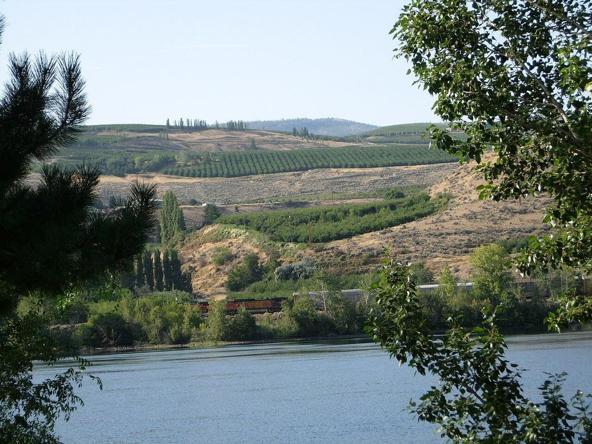

BLANC
Accueil › États-Unis › Columbia Valley
AVAColumbia Valley
Grande AVA de l’État de Washington, avec une petite partie en Oregon, située à l’est des Cascades sous un climat semi-aride aux étés ensoleillés. Elle concentre l’essentiel du vignoble de Washington.

Histoire
Les premières vignes de l’État de Washington furent plantées au XIXe siècle et, après la Prohibition, la production se concentra pendant des décennies sur le raisin de table, le jus et les vins de cépages américains comme le concord. La viticulture de Vitis vinifera tournée vers la qualité prit son essor dans les années 1960 et 1970, avec des entreprises comme celle qui allait devenir Chateau Ste. Michelle et avec de petites caves pionnières à Walla Walla et dans la Yakima. Yakima Valley fut la première AVA de l’État, et peu après fut reconnue la grande AVA Columbia Valley, qui englobe la plupart des autres. Depuis les années 1990, le nombre de caves a crû rapidement, et Washington s’est imposé comme le deuxième État producteur de vin du pays, derrière la Californie. Beaucoup de caves sont installées près de Seattle, à l’ouest des Cascades, et y vinifient des raisins acheminés depuis l’est de l’État.
Climat et sols
La chaîne des Cascades arrête les perturbations du Pacifique et place l’est de l’État dans une ombre pluviométrique : le climat est semi-aride, avec très peu de pluie, des étés chauds et secs et des hivers froids. La latitude septentrionale procure des journées d’été très longues, et les nuits fraîches aident à préserver l’acidité. L’irrigation, à partir du Columbia et de ses affluents comme la Yakima et la Snake, est indispensable. Le principal risque tient aux fortes gelées d’hiver, capables d’endommager les ceps. Les sols, sableux et limoneux, proviennent en grande partie du lœss et des sédiments déposés par les inondations de Missoula à la fin de la dernière glaciation ; ils sont pauvres en matière organique et bien drainés. Le phylloxéra ne s’étant guère installé dans ces sols, beaucoup de vignes sont cultivées franches de pied.
Sous-zones
L’AVA comprend de nombreuses sous-zones, parmi lesquelles Yakima Valley, Walla Walla Valley (partagée avec l’Oregon), Red Mountain, Horse Heaven Hills, Wahluke Slope, Rattlesnake Hills, Snipes Mountain, Ancient Lakes et Lake Chelan. Red Mountain, l’une des plus petites, est connue pour ses rouges puissants de cabernet-sauvignon.
Styles
Washington offre des rouges au fruit mûr mais à l’acidité marquée, surtout de cabernet-sauvignon, de merlot et de syrah, ainsi que des assemblages de type bordelais. Parmi les blancs se distinguent le riesling, dans des styles allant du sec au doux, et le chardonnay. On cultive aussi du cabernet franc, du sauvignon blanc et, dans une moindre mesure, d’autres cépages.
Vins · Columbia Valley
BLANC